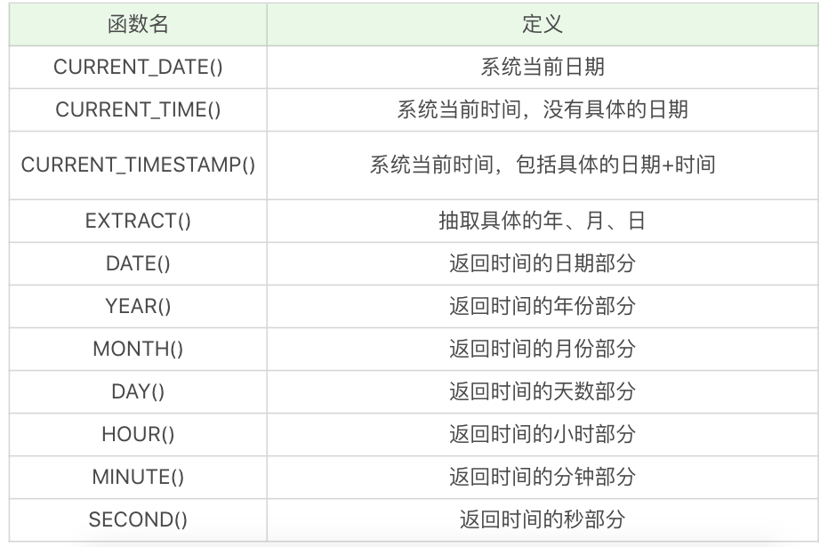

继承关系
final
- 不能再继续继承下去

生命的意义是成为你自己！

datetime类型和string类型比较不安全
无法确认 birthdate 的数据类型是字符串，还是 datetime 类型，如果你想对日期部分进行比较，那么使用DATE(birthdate)来进行比较是更安全的


union {
struct {
metadata_t *metadata;
unsigned char unused [msg_t_size - (8 + sizeof (metadata_t *) + 2)];
unsigned char type;
unsigned char flags;
} base;
struct {
metadata_t *metadata;
unsigned char data [max_vsm_size];
unsigned char size;
unsigned char type;
unsigned char flags;
} vsm;
struct {
metadata_t *metadata;
content_t *content;
unsigned char unused [msg_t_size - (8 + sizeof (metadata_t *) + sizeof (content_t*) + 2)];
unsigned char type;
unsigned char flags;
} lmsg;
struct {
metadata_t *metadata;
void* data;
size_t size;
unsigned char unused
[msg_t_size - (8 + sizeof (metadata_t *) + sizeof (void*) + sizeof (size_t) + 2)];
unsigned char type;
unsigned char flags;
} cmsg;
struct {
metadata_t *metadata;
unsigned char unused [msg_t_size - (8 + sizeof (metadata_t *) + 2)];
unsigned char type;
unsigned char flags;
} delimiter;
} u;


zmq::io_thread_t *zmq::ctx_t::choose_io_thread (uint64_t affinity_)
{
if (_io_threads.empty ())
return NULL;
// Find the I/O thread with minimum load.
int min_load = -1;
io_thread_t *selected_io_thread = NULL;
for (io_threads_t::size_type i = 0; i != _io_threads.size (); i++) {
if (!affinity_ || (affinity_ & (uint64_t (1) << i))) {
int load = _io_threads[i]->get_load ();
if (selected_io_thread == NULL || load < min_load) {
min_load = load;
selected_io_thread = _io_threads[i];
}
}
}
return selected_io_thread;
}